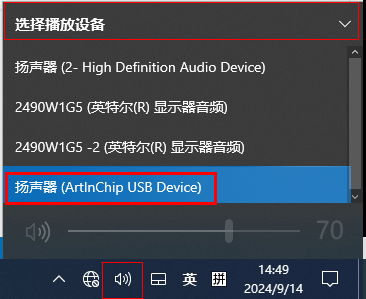
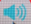
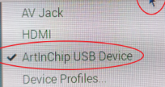

配置附加功能
除了提供基本的显示功能，USB Display 设备还能提供 USB HID TP / USB Audio / USB MSC 等附加功能。附加功能都是独立可选的，可以根据产品形态灵活组合。
USB Display 利用 CherryUSB 组合了一个 USB 复合设备，从而可以作为提供多个功能的组合设备。其中 Interface 0 是基本的 Display 功能，其他每一个 Interface 对应一个独立的功能。
配置 USB HID TP
-
确保正确配置 TP（触摸屏）参数，并且 TP 可在本地正常使用。
关于 TP 的详细配置说明，可查看 CTP 移植指南。
- 在 SDK 根目录，执行下列命令，进入 menuconfig
的功能配置界面：
scons menuconfig
-
使能 CherryUSB 中 HID TP 类型的 Device Class 驱动，并且使能对应实例模板。
> Local packages options > Third-party packages options [*] CherryUSB: tiny and portable USB host/device stack for embedded system with USB IP ---> [*] Enable usb device mode ---> [*] Enable usb hid device ---> Use hid template (touch) ---> Hid Touch Parameter ---> -
使能 Display 类型的 Device Class 驱动，并且在 Composite Device 中使能相应配置：
> Local packages options > Third-party packages options [*] CherryUSB: tiny and portable USB host/device stack for embedded system with USB IP ---> [*] Enable usb device mode ---> [*] Enable usb hid device ---> [*] Enable usb display device ---> [*] Enable composite device ---> [*] Use Composite template Composite Parameter ---> [*] USBDEV_DISP_COMPOSITE [*] USBDEV_TOUCH_COMPOSITE
配置 USB Audio (UAC)
-
确保正确配置 TP（触摸屏）参数，并且 TP 可在本地正常使用。
关于 TP 的详细配置说明，可查看 CTP 移植指南。
- 在 SDK 根目录，执行下列命令，进入 menuconfig
的功能配置界面：
scons menuconfig
-
使能 CherryUSB 中 HID TP 类型的 Device Class 驱动，并且使能对应实例模板。
> Local packages options > Third-party packages options [*] CherryUSB: tiny and portable USB host/device stack for embedded system with USB IP ---> [*] Enable usb device mode ---> [*] Enable usb hid device ---> Use hid template (touch) ---> Hid Touch Parameter ---> -
使能 Display 类型的 Device Class 驱动：
> Local packages options > Third-party packages options [*] CherryUSB: tiny and portable USB host/device stack for embedded system with USB IP ---> [*] Enable usb device mode ---> [*] Enable usb hid device ---> [*] Enable usb display device ---> -
在
Enable composite device中使能下列配置，添加一个DISPLAY+TP HID的 USB 复合设备：> Local packages options > Third-party packages options [*] CherryUSB: tiny and portable USB host/device stack for embedded system with USB IP ---> [*] Enable usb device mode ---> [*] Enable usb hid device ---> [*] Enable usb display device ---> [*] Enable composite device ---> Composite Parameter ---> [*] USBDEV_DISP_COMPOSITE [*] USBDEV_TOUCH_COMPOSITE -
配置完成后，可按照以下方式在不同操作系统中使用 UAC 功能：
-
对于 Windows 系统，在 PC 设备的扬声器下拉菜单中，选择扬声器(ArtInChip USB Device)。

-
对于 Linux 系统：
-
在电脑桌面上，找到音量图标 后，点击鼠标右键。
-
在弹出的菜单栏中，选择 ArtInChip USB Device：
。
-
-
配置 USB MSC (U 盘)
如果 USB Display 产品需要附带 U 盘安装功能，需要在 USB 复合设备中增加一个 MSC 功能。
-
如果 PC 没有安装驱动，设备会自动模拟出一个 U 盘，存储 PC 驱动安装包。
-
当用户安装完驱动程序后， U 盘又会自动消失。
关于驱动的安装流程，可查看 安装驱动。
- 在 SDK 根目录，执行下列命令，进入 menuconfig
的功能配置界面：
scons menuconfig
-
配置
/rodata分区。> Application options ---> [*] Using File System Image 0 ---> Select File System Type (FATFS) ---> (packages/third-party/cherryusb/tools/aic_usbdisplay/) Data Directory (rodata.fatfs) Image Name [*] auto calcuate image sizeMSC 功能的核心是将本地存储分区/rodata挂载成 USB MSC 设备，因此必须优先配置/rodata分区。表 1. 参数描述 参数 描述 Using File System Image 0配置文件系统镜像格式。 Select File System Type选择分区格式，如选择 FATFS，则系统显示 Select File System Type (FATFS)。(packages/third-party/cherryusb/tools/aic_usbdisplay/) Data Directory打包的文件夹，示例目录为 (packages/third-party/cherryusb/tools/aic_usbdisplay/) Data Directory，用于存放驱动安装包文件。 (rodata.fatfs) Image Name映像名为 rodata.fatfsauto calcuate image size自动计算镜像尺寸。 -
在 menuconfig 中使能 CherryUSB 中 Audio 类型的 Device Class 驱动，并且使能对应实例模板：
> Local packages options > Third-party packages options [*] CherryUSB: tiny and portable USB host/device stack for embedded system with USB IP ---> [*] Enable usb device mode ---> [*] Enable usb msc device ---> Use ram or storage template (msc storage) ---> MSC Storage Parameter ---> [*] USBDEV_MSC_THREAD [*] USBD_MSC_STORAGE_USING_HOTPLUG (/rodata) MSC_STORAGE_PATH (204800) USBDEV_MSC_MAX_BUFSIZE表 2. 参数描述 参数 描述 (/rodata) MSC_STORAGE_PATH设置 USB MSC 挂载分区为 /rodata -
使能 Display 类型的 Device Class 驱动，并且在 Composite Device 中使能相应配置。
> Local packages options > Third-party packages options [*] CherryUSB: tiny and portable USB host/device stack for embedded system with USB IP ---> [*] Enable usb device mode ---> [*] Dynamic registration mode ---> [*] Use AIC USB Display dynamic registration [*] Enable usb hid device ---> [*] Enable usb msc device ---> [*] Enable usb audio device ---> [*] Enable usb display device ---> -*- Enable composite device --->MSC 需要动态的添加和删除，因此复合设备的配置方法略有不同。如上所示，添加了一个
DISPLAY+TP HID+UAC+MSC的 USB 复合设备，且MSC会根据驱动安装情况动态出现。